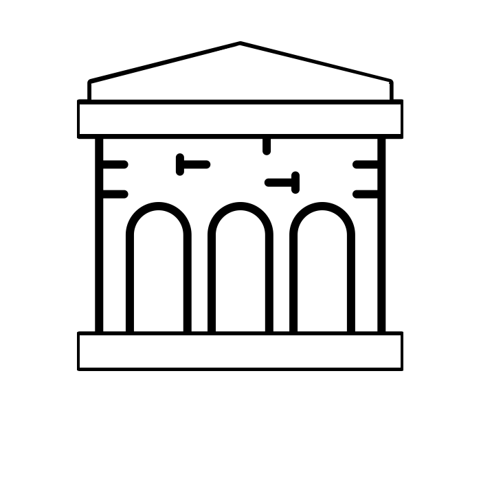

Magnetic Tribeca Attracts Art Galleries To Fill Its Retail Spaces
by Violetta Nespolo
RETAIL SPACES
Spaces in Tribeca have their own identity: they are historic, landmark buildings with high ceilings, old facades and provide owners a lot of raw material that can be restored into something beautiful. This creates a fascinating sense of new and old blending together.

BIO
Violetta Nespolo, born in Turin, Italy.
Has a Bachelor Degree in Economics and Management for Arts and Culture and a Masters in Marketing Management from Bocconi University in Milan.
Worked for Juventus Football Club in managing partnership relationships, and for over two years in brand consulting for Interbrand, as a strategist.
Moved to New York to study Journalism at Newmark Graduate School of Journalism. Works as Marketing Manager for the startup Caracol.
RENT PRICE
The price of retail spaces in other neighborhoods of Manhattan, such as Soho and Chelsea, has inflated considerably over the past few years, and in Tribeca you can get at least double the space, including storage space and downstairs spaces.
ACCESSIBILITY
Tribeca is also far more accessible than other neighborhoods such as Chelsea through public transport: many express trains stop here, and Canal Street is a hub for most subway lines, it is close to key bridges and major touristic spots downtown.
CONTACTS
violetta.nespolo@journalism.cuny.edu
+1(917)640-7416
Instagram: @24fultonstreet
Twitter: @ViolettaNespolo
.
ARTISTIC HISTORY
Tribeca has never had many galleries. Nonetheless, the area always seems to have attracted numerous artists, who enjoyed living in the large industrial spaces, in a quiet area where creativity was left free to flow.